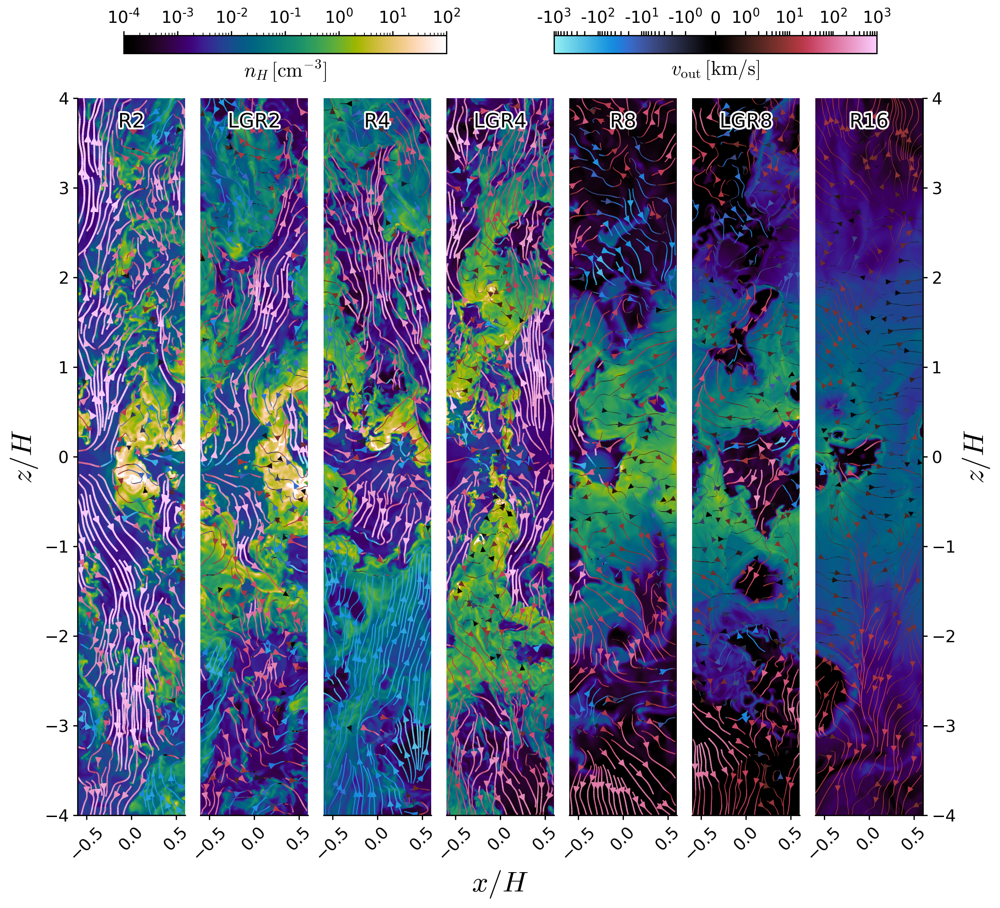

TIGRESS framework
The TIGRESS code is built on the Athena MHD code package with additional physical modules.
Three phase ISM in Galaxies Resolving Evolution with Star formation and Supernova feedback
Core Developers: Chang-Goo Kim and Eve Ostriker

The TIGRESS code is built on the Athena MHD code package with additional physical modules.

New TIGRESS framework develompent with radiation and chemistry with Jeong-Gyu Kim and Munan Gong

TIGRESS extension to spiral arm coordinates with Woong-Tae Kim

TIGRESS extension to galactic center models with bar-driven inflows with Sanghyuk Moon and Woong-Tae Kim

TIGRESS extension to model multiphase ISM interacting with ICM winds with Woorak Choi and Aeree Chung
 Large scale outflows in star-forming galaxies are observed to be ubiquitous, and are a key aspect of theoretical modeling of galactic evolution in a cosmological context. Gas blown out from galactic disks, similar to gas within galaxies, consists of multiple phases with large contrasts of density, temperature, and other properties. To study multiphase outflows as emergent phenomena, we run a suite of ~pc-resolution local galactic disk simulations using the TIGRESS framework. Explicit modeling of the interstellar medium (ISM), including star formation and self-consistent radiative heating plus supernova feedback, regulates ISM properties and drives the outflow. The main components of outflowing gas are mass-delivering cool gas (T~104K) and energy/metal-delivering hot gas (T~106K). Cool mass outflow rates measured at outflow launch points (one or two scale heights) are 1--100 times the SFR (decreasing with ΣSFR), although in massive galaxies most mass falls back due to insufficient outflow velocity. The hot galactic outflow carries mass comparable to 10% of the SFR, together with with 10-20% of the energy and 30-60% of the metal mass injected by SN feedback. The characteristic outflow velocities of both phases scale very weakly with SFR, as vout∝ΣSFR0.1-0.2, consistent with observations. Importantly, our analysis demonstrates that in any physically-motivated cosmological wind model, it is crucial to include two distinct thermal wind components.
A comprehensive characterization of multiphase galactic outflows from a suite of TIGRESS simulations in the context of the SMAUG (Simulating Multiscale Astrophysics to Understand Galaxies) project. We investigate the scaling of outflow mass, momentum, energy, and metal loading factors with galactic disk properties, including star formation rate (SFR) surface density (ΣSFR), gas surface density, and total pressure (or weight).
Outflow mass flux
Multiphase outflow anaylsis of the Solar neighborhood TIGRESS model, including phase-separated investigations of mass, momentum, and energy flux profiles as well as velocity distributions.
Flux exchanges in the extraplanar region (1kpc<z<3kpc) between different phase outlfows are quantified. The cool fountain flow (T~104K) gains mass flux from the intermediate phase (T~105K) and momentum/energy flux from the hot wind (T≥106K).
Star formation rates are self-regulated until star formation feedback modulated pressure provides support against the disk weight. The theory refined with the TIGRESS simulation suite is in preparation (Ostriker & CG Kim).
Ostriker & CG Kim (in prep.)
WT Kim, CG Kim, Ostriker
Moon, WT Kim, CG Kim, Ostriker (in prep.)
Choi, Kim, Chung (in prep.)
Mao, Ostriker, Kim
Polarized Dust Emission from TIGRESS as CMB foreground templates

CO-H2 conversion factor
Diffuse Ioinized Gas
Post-processing of TIGRESS snapshots using LaRT to understand the WF effect on HI 21cm line excitation.